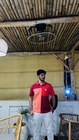
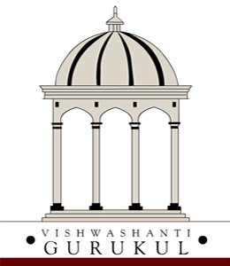

About Me

Hi, I'm Shourya Patel — a passionate student currently pursuing biotechnology. I have a strong academic background in science, research, and innovation with interests in environmental science and sustainable development. I enjoy learning through exploration and hands-on work, especially in the field of biology and technology.
Education
(An IB World School)

I completed my International Baccalaureate Diploma Programme (IBDP) at MIT Pune's Vishwashanti Gurukul, where I developed a strong foundation in scientific inquiry and interdisciplinary thinking.
My school journey was shaped by international exposure, creativity, and a strong emphasis on personal and academic growth. Through various internal assessments and extended essay projects, I honed my skills in scientific communication and research methodology.
University: Shoolini University
I am currently pursuing my undergraduate degree in biotechnology at Shoolini University, one of India’s top-ranked private research institutions.
At Shoolini, I am part of a vibrant community of researchers and innovators. The university emphasizes cutting-edge biotechnology research and industry integration, giving me ample opportunities to engage in real-world problem-solving and lab-based exploration.